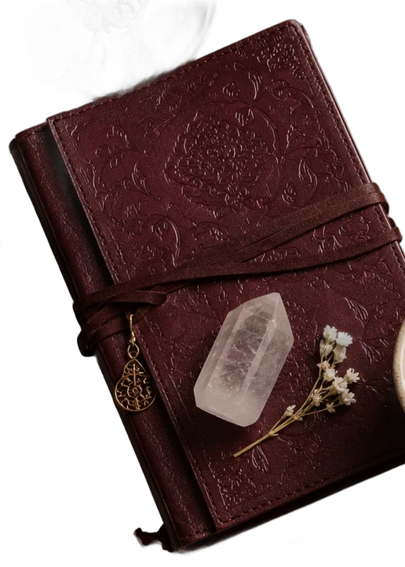
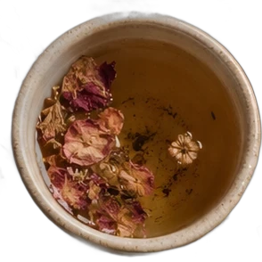
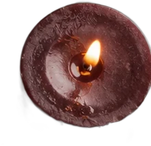
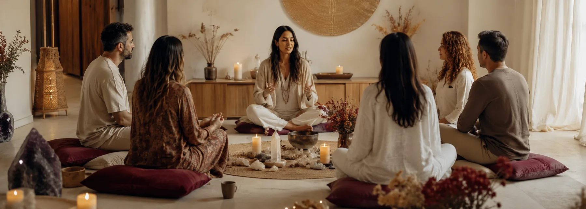

Encuentros en vivo
Por videollamada, una vez por semana, con la grabación disponible por si no llegás. Los presenciales son en Zona Sur, en el espacio de consulta.
Terapia holística · Zona Sur, GBA
Cursos de biodecodificación, bioneuroemoción y terapia transgeneracional para entender tu propia historia — y, si te interesa, acompañar la de otros. En vivo online y presencial en Zona Sur.


01 — Los cursos
Cada curso se puede hacer solo o como parte de un recorrido. Abrí cualquiera para ver el programa completo, clase por clase, antes de decidir.
No hay cursos con esa modalidad todavía.
02 — Cómo trabajo
Girá la rueda o seguí bajando
Empezamos por lo que aparece: un dolor que vuelve, una relación que se repite, una decisión que no podés tomar. No lo tratamos como un enemigo — lo tratamos como información.
Armamos tu genograma: quiénes vinieron antes, qué fechas se repiten, qué se calló. Muchas veces lo que sentís propio empezó dos generaciones atrás.
Poner palabras cambia el lugar desde donde mirás. Acá aparecen las lealtades invisibles, los mandatos y las herencias que sostenías sin saber que las sostenías.
No se trata de cortar con nadie. Se trata de quedarte con lo que te sirve y devolver, con respeto, lo que nunca fue tuyo. Ahí la rueda vuelve a empezar, pero un poco más liviana.
03 — Quién te acompaña
Soy terapeuta holística. Trabajo con biodecodificación, bioneuroemoción y terapia transgeneracional, y armé estos cursos con acompañamiento profesional para poder enseñarlos con la misma seriedad con la que los aprendí.
No prometo milagros ni curas. Prometo un espacio ordenado, con método y sin apuro, donde puedas mirar tu historia con otros ojos y quedarte con herramientas que después usás sola.
04 — Cómo se cursa
Por videollamada, una vez por semana, con la grabación disponible por si no llegás. Los presenciales son en Zona Sur, en el espacio de consulta.
Cuadernillo por módulo, ejercicios para hacer entre clases y las plantillas de genograma listas para imprimir.

Al terminar recibís un certificado de asistencia al curso. No es un título oficial ni habilita a ejercer: es el respaldo de lo que cursaste.

Nadie se sana de apuro. Se empieza por entender, y entender ya cambia algo.
viaje_almico
05 — Quienes ya cursaron
Entré queriendo entender un dolor de espalda que no se iba y terminé entendiendo a mi familia. Fue mucho más de lo que esperaba.
El genograma me ordenó cosas que venía arrastrando hace años. Lo hacés con la guía puesta, no te deja sola con la información.
Hice el de meditación mientras trabajaba y pude seguirlo a mi ritmo. Las prácticas cortas fueron lo que más me sirvió.
06 — Preguntas
¿Te quedó una duda que no está acá? Escribime y la charlamos sin compromiso.
No. Los cursos de nivel inicial arrancan desde cero y están pensados para quien nunca trabajó con estas herramientas. Los de nivel formación sí piden haber cursado alguno de los iniciales.
No, y es importante que quede claro: el acompañamiento holístico no diagnostica, no receta y no reemplaza ningún tratamiento médico ni psicológico. Si estás en tratamiento, seguí con tu profesional. Esto suma una mirada, no sustituye la suya.
Los dos caminos existen. Casi todo el mundo empieza por lo propio y algunos siguen para poder acompañar. En cada curso aclaro qué te llevás si lo hacés por vos y qué si lo hacés para tu práctica.
Los encuentros en vivo quedan grabados y disponibles durante toda la cursada. Podés verlo cuando puedas y traer tus dudas al encuentro siguiente.
Elegí los cursos que te interesan, tocá «Sumar a mi inscripción» y al finalizar se arma un mensaje de WhatsApp con tu selección. Ahí coordinamos la forma de pago y te confirmo el cupo.
En Zona Sur del Gran Buenos Aires. La dirección exacta te la paso por WhatsApp al confirmar la inscripción, junto con los días y horarios del grupo.
07 — Inscripción
Contame qué te está pasando o qué curso te llamó la atención. Te respondo yo, no un bot, y te digo con honestidad si esto es para vos.
11 2392-2934Zona Sur, GBA · Encuentros online en vivo para todo el país.